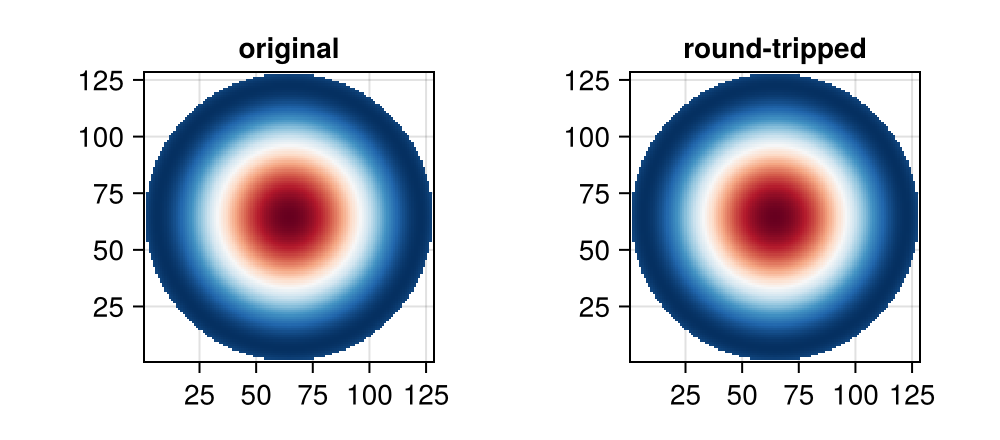
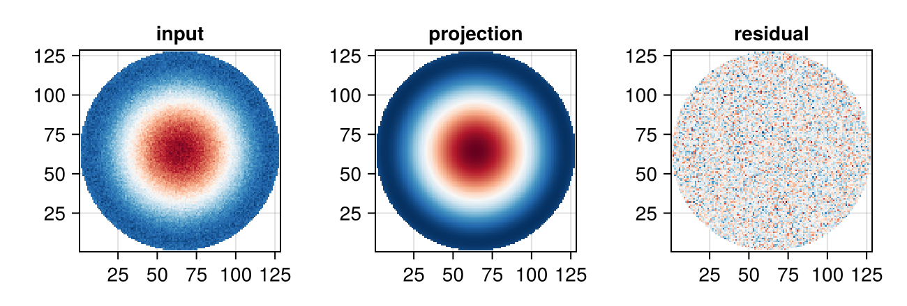

using PhaseBases
using LinearAlgebra: norm
using Random: seed!
seed!(1) ## reproducible noise
using CairoMakie
using PhaseBases: decompose ## disambiguate from Makie/GeometryBasics `decompose`
CairoMakie.activate!(; type="png")Modal and Zonal Phases
PhaseBases represents wavefronts in two complementary forms:
ModalPhase— coefficient vector tied to a basis (lazy, no grid untilcollect)ZonalPhase— explicit 2D pixel array
This tutorial covers construction, arithmetic, and conversion between them.
1 — ModalPhase Construction
zbas = ZernikeBW(128, 6)ZernikeBW([[1.0 1.0 … 1.0 1.0; 1.0 1.0 … 1.0 1.0; … ; 1.0 1.0 … 1.0 1.0; 1.0 1.0 … 1.0 1.0], [-1.0 -1.0 … -1.0 -1.0; -0.984251968503937 -0.984251968503937 … -0.984251968503937 -0.984251968503937; … ; 0.984251968503937 0.984251968503937 … 0.984251968503937 0.984251968503937; 1.0 1.0 … 1.0 1.0], [-1.0 -0.984251968503937 … 0.984251968503937 1.0; -1.0 -0.984251968503937 … 0.984251968503937 1.0; … ; -1.0 -0.984251968503937 … 0.984251968503937 1.0; -1.0 -0.984251968503937 … 0.984251968503937 1.0], [2.0 1.968503937007874 … -1.968503937007874 -2.0; 1.968503937007874 1.9375038750077502 … -1.9375038750077502 -1.968503937007874; … ; -1.968503937007874 -1.9375038750077502 … 1.9375038750077502 1.968503937007874; -2.0 -1.968503937007874 … 1.968503937007874 2.0], [3.0 2.9375038750077502 … 2.9375038750077502 3.0; 2.9375038750077502 2.8750077500155005 … 2.8750077500155005 2.9375038750077502; … ; 2.9375038750077502 2.8750077500155005 … 2.8750077500155005 2.9375038750077502; 3.0 2.9375038750077502 … 2.9375038750077502 3.0], [0.0 -0.031248062496124884 … -0.031248062496124884 0.0; 0.031248062496124884 0.0 … 0.0 0.031248062496124884; … ; 0.031248062496124884 0.0 … 0.0 0.031248062496124884; 0.0 -0.031248062496124884 … -0.031248062496124884 0.0], [-2.0 -1.9062558125116253 … -1.9062558125116253 -2.0; -1.999259904031619 -1.9069920029603842 … -1.9069920029603842 -1.999259904031619; … ; 1.999259904031619 1.9069920029603842 … 1.9069920029603842 1.999259904031619; 2.0 1.9062558125116253 … 1.9062558125116253 2.0], [-4.0 -3.906255812511626 … -3.906255812511626 -4.0; -3.844739972944513 -3.752472071873278 … -3.752472071873278 -3.844739972944513; … ; 3.844739972944513 3.752472071873278 … 3.752472071873278 3.844739972944513; 4.0 3.906255812511626 … 3.906255812511626 4.0], [-4.0 -3.844739972944513 … 3.844739972944513 4.0; -3.906255812511626 -3.752472071873278 … 3.752472071873278 3.906255812511626; … ; -3.906255812511626 -3.752472071873278 … 3.752472071873278 3.906255812511626; -4.0 -3.844739972944513 … 3.844739972944513 4.0], [2.0 1.999259904031619 … -1.999259904031619 -2.0; 1.9062558125116253 1.9069920029603842 … -1.9069920029603842 -1.9062558125116253; … ; 1.9062558125116253 1.9069920029603842 … -1.9069920029603842 -1.9062558125116253; 2.0 1.999259904031619 … -1.999259904031619 -2.0] … [-19.0 -17.84923096870681 … 17.84923096870681 19.0; -18.134818664206122 -17.016895823432552 … 17.016895823432552 18.134818664206122; … ; -18.134818664206122 -17.016895823432552 … 17.016895823432552 18.134818664206122; -19.0 -17.84923096870681 … 17.84923096870681 19.0], [12.0 11.683194432053831 … -11.683194432053831 -12.0; 11.139700871254927 10.846053964881138 … -10.846053964881138 -11.139700871254927; … ; 11.139700871254927 10.846053964881138 … -10.846053964881138 -11.139700871254927; 12.0 11.683194432053831 … -11.683194432053831 -12.0], [4.0 3.689999073446102 … -3.689999073446102 -4.0; 3.9951177929511914 3.6948043953445353 … -3.6948043953445353 -3.9951177929511914; … ; 3.9951177929511914 3.6948043953445353 … -3.6948043953445353 -3.9951177929511914; 4.0 3.689999073446102 … -3.689999073446102 -4.0], [-8.0 -7.622201625563417 … 7.622201625563417 8.0; -7.622201625563417 -7.273236998709716 … 7.273236998709716 7.622201625563417; … ; 7.622201625563417 7.273236998709716 … -7.273236998709716 -7.622201625563417; 8.0 7.622201625563417 … -7.622201625563417 -8.0], [0.0 -0.838101531552379 … 0.838101531552379 0.0; 0.838101531552379 0.0 … 0.0 -0.838101531552379; … ; -0.838101531552379 0.0 … 0.0 0.838101531552379; 0.0 0.838101531552379 … -0.838101531552379 0.0], [52.0 48.749456931695725 … -48.749456931695725 -52.0; 48.749456931695725 45.64515291729127 … -45.64515291729127 -48.749456931695725; … ; -48.749456931695725 -45.64515291729127 … 45.64515291729127 48.749456931695725; -52.0 -48.749456931695725 … 48.749456931695725 52.0], [63.0 58.96252523934616 … 58.96252523934616 63.0; 58.96252523934616 55.09714850418587 … 55.09714850418587 58.96252523934616; … ; 58.96252523934616 55.09714850418587 … 55.09714850418587 58.96252523934616; 63.0 58.96252523934616 … 58.96252523934616 63.0], [0.0 -0.7738496470417251 … -0.7738496470417251 0.0; 0.7738496470417251 0.0 … 0.0 0.7738496470417251; … ; 0.7738496470417251 0.0 … 0.0 0.7738496470417251; 0.0 -0.7738496470417251 … -0.7738496470417251 0.0], [-28.0 -26.39188332558063 … -26.39188332558063 -28.0; -26.39188332558063 -24.86981566390805 … -24.86981566390805 -26.39188332558063; … ; -26.39188332558063 -24.86981566390805 … -24.86981566390805 -26.39188332558063; -28.0 -26.39188332558063 … -26.39188332558063 -28.0], [0.0 0.36322894113416204 … 0.36322894113416204 0.0; -0.36322894113416204 0.0 … 0.0 -0.36322894113416204; … ; -0.36322894113416204 0.0 … 0.0 -0.36322894113416204; 0.0 0.36322894113416204 … 0.36322894113416204 0.0]], [[4.1462177463522696e-21 0.0 … 0.0 0.0; -5.164455658880669e-22 0.0 … 0.0 0.0; … ; 0.0 0.0 … 0.0 0.0; 0.0 0.0 … 0.0 0.0], [1.608122063613304e-19 0.0 … 0.0 0.0; 3.1076944118050413e-21 0.0 … 0.0 0.0; … ; 0.0 0.0 … 0.0 0.0; 0.0 0.0 … 0.0 0.0], [1.6022334240068585e-17 0.0 … 0.0 0.0; 8.230376606918749e-20 0.0 … 0.0 0.0; … ; 0.0 0.0 … 0.0 0.0; 0.0 0.0 … 0.0 0.0], [9.401513906485833e-20 0.0 … 0.0 0.0; 2.500098189609485e-19 0.0 … 0.0 0.0; … ; 0.0 0.0 … 0.0 0.0; 0.0 0.0 … 0.0 0.0], [-7.815704909240517e-20 0.0 … 0.0 0.0; -1.006735434646472e-20 0.0 … 0.0 0.0; … ; 0.0 0.0 … 0.0 0.0; 0.0 0.0 … 0.0 0.0], [7.205222473646412e-19 0.0 … 0.0 0.0; 1.0560430711368837e-19 0.0 … 0.0 0.0; … ; 0.0 0.0 … 0.0 0.0; 0.0 0.0 … 0.0 0.0], [-4.0005293495026224e-20 0.0 … 0.0 0.0; -8.37458188521239e-18 0.0 … 0.0 0.0; … ; 0.0 0.0 … 0.0 0.0; 0.0 0.0 … 0.0 0.0], [5.522528283095801e-20 0.0 … 0.0 0.0; -3.0043232707777335e-18 0.0 … 0.0 0.0; … ; 0.0 0.0 … 0.0 0.0; 0.0 0.0 … 0.0 0.0], [2.56542940282936e-18 0.0 … 0.0 0.0; 9.762952468299782e-21 0.0 … 0.0 0.0; … ; 0.0 0.0 … 0.0 0.0; 0.0 0.0 … 0.0 0.0], [2.2170681611114544e-18 0.0 … 0.0 0.0; -1.2125511871759296e-19 0.0 … 0.0 0.0; … ; 0.0 0.0 … 0.0 0.0; 0.0 0.0 … 0.0 0.0] … [4.3242328505871135e-18 0.0 … 0.0 0.0; 4.573389842049736e-20 0.0 … 0.0 0.0; … ; 0.0 0.0 … 0.0 0.0; 0.0 0.0 … 0.0 0.0], [1.6311124110429233e-18 0.0 … 0.0 0.0; -6.78602367390947e-20 0.0 … 0.0 0.0; … ; 0.0 0.0 … 0.0 0.0; 0.0 0.0 … 0.0 0.0], [-1.3056239242879576e-18 0.0 … 0.0 0.0; 7.55180933070952e-21 0.0 … 0.0 0.0; … ; 0.0 0.0 … 0.0 0.0; 0.0 0.0 … 0.0 0.0], [-1.799729627596849e-20 0.0 … 0.0 0.0; 2.643772950705e-18 0.0 … 0.0 0.0; … ; 0.0 0.0 … 0.0 0.0; 0.0 0.0 … 0.0 0.0], [-1.800915922910382e-20 0.0 … 0.0 0.0; -1.0832509276306078e-18 0.0 … 0.0 0.0; … ; 0.0 0.0 … 0.0 0.0; 0.0 0.0 … 0.0 0.0], [-1.7167073123634375e-20 0.0 … 0.0 0.0; -5.755487147239574e-19 0.0 … 0.0 0.0; … ; 0.0 0.0 … 0.0 0.0; 0.0 0.0 … 0.0 0.0], [1.7215576408058883e-18 0.0 … 0.0 0.0; -3.2470776574369056e-20 0.0 … 0.0 0.0; … ; 0.0 0.0 … 0.0 0.0; 0.0 0.0 … 0.0 0.0], [7.928758192708522e-18 0.0 … 0.0 0.0; -3.85774393877642e-20 0.0 … 0.0 0.0; … ; 0.0 0.0 … 0.0 0.0; 0.0 0.0 … 0.0 0.0], [-8.441137028866722e-18 0.0 … 0.0 0.0; -1.3252109887242045e-19 0.0 … 0.0 0.0; … ; 0.0 0.0 … 0.0 0.0; 0.0 0.0 … 0.0 0.0], [3.152127337290287e-18 0.0 … 0.0 0.0; 1.0407110153394997e-19 0.0 … 0.0 0.0; … ; 0.0 0.0 … 0.0 0.0; 0.0 0.0 … 0.0 0.0]], [0 0 … 0 0; 0 0 … 0 0; … ; 0 0 … 0 0; 0 0 … 0 0], Real[NaN NaN … NaN NaN; NaN NaN … NaN NaN; … ; NaN NaN … NaN NaN; NaN NaN … NaN NaN], CartesianIndex{2}[CartesianIndex(54, 2), CartesianIndex(55, 2), CartesianIndex(56, 2), CartesianIndex(57, 2), CartesianIndex(58, 2), CartesianIndex(59, 2), CartesianIndex(60, 2), CartesianIndex(61, 2), CartesianIndex(62, 2), CartesianIndex(63, 2) … CartesianIndex(66, 127), CartesianIndex(67, 127), CartesianIndex(68, 127), CartesianIndex(69, 127), CartesianIndex(70, 127), CartesianIndex(71, 127), CartesianIndex(72, 127), CartesianIndex(73, 127), CartesianIndex(74, 127), CartesianIndex(75, 127)], [112.44554237496477, 56.17019079708265, 56.17019079708265, 45.89991823473829, 64.79949042023154, 45.739716484539954, 39.64409615523042, 39.644742755610544, 39.644742755610544, 39.64409615523042 … 32.311400577587165, 32.310497153155474, 32.30882137892952, 29.930292519791593, 30.101433770154113, 30.000199219703486, 42.268897099223125, 29.775559618018555, 29.670124810403713, 29.83810413915565])Dense: full coefficient vector
coef = zeros(length(zbas))
coef[5] = 0.8; coef[13] = -0.4
wf = ModalPhase(coef, zbas)Modal phase in ZernikeBW basis with coefficients [0.0, 0.0, 0.0, 0.0, 0.8, 0.0, 0.0, 0.0, 0.0, 0.0, 0.0, 0.0, -0.4, 0.0, 0.0, 0.0, 0.0, 0.0, 0.0, 0.0, 0.0, 0.0, 0.0, 0.0, 0.0, 0.0, 0.0, 0.0]
Sparse: only the non-zero terms
wf_sp = ModalPhase([5, 13], [0.8, -0.4], zbas) ## same result
collect(wf) ≈ collect(wf_sp) ## truetrueZero-initialized
wf0 = ModalPhase(zbas) ## all-zero coefficientsModal phase in ZernikeBW basis with coefficients [0.0, 0.0, 0.0, 0.0, 0.0, 0.0, 0.0, 0.0, 0.0, 0.0, 0.0, 0.0, 0.0, 0.0, 0.0, 0.0, 0.0, 0.0, 0.0, 0.0, 0.0, 0.0, 0.0, 0.0, 0.0, 0.0, 0.0, 0.0]
Access and mutate coefficients:
coefficients(wf)[5] ## 0.8
coefficients!(wf0, coef) ## set in placeModal phase in ZernikeBW basis with coefficients [0.0, 0.0, 0.0, 0.0, 0.8, 0.0, 0.0, 0.0, 0.0, 0.0, 0.0, 0.0, -0.4, 0.0, 0.0, 0.0, 0.0, 0.0, 0.0, 0.0, 0.0, 0.0, 0.0, 0.0, 0.0, 0.0, 0.0, 0.0]
2 — Arithmetic
ModalPhase supports +, -, scalar * when phases share the same basis.
wf_a = ModalPhase([5], [1.0], zbas)
wf_b = ModalPhase([13], [0.5], zbas)
wf_sum = wf_a + wf_b
coefficients(wf_sum)[[5, 13]] ## [1.0, 0.5]
wf_neg = -wf_a
wf_scl = 3.0 * wf_bModal phase in ZernikeBW basis with coefficients [0.0, 0.0, 0.0, 0.0, 0.0, 0.0, 0.0, 0.0, 0.0, 0.0, 0.0, 0.0, 1.5, 0.0, 0.0, 0.0, 0.0, 0.0, 0.0, 0.0, 0.0, 0.0, 0.0, 0.0, 0.0, 0.0, 0.0, 0.0]
norm returns the coefficient-weighted norm (valid for orthogonal bases):
norm(wf_a)64.799490420231543 — ZonalPhase
A thin wrapper around a 2D Float64 array.
arr = collect(wf)
zp = ZonalPhase(arr)
coefficients(zp) === arr ## same underlying data
zp[64, 64] ## pixel access-1.1995040359105456Arithmetic works element-wise:
zp2 = zp + zp
maximum(abs, coefficients(zp2) .- 2 .* arr) ## ≈ 00.04 — Conversions
Modal → Zonal: materialize via ZonalPhase(modal) or convert.
zp_from_modal = ZonalPhase(wf)ZonalPhase([-2.8 -2.627354309405129 … -2.627354309405129 -2.8; -2.627354309405129 -2.459395537577113 … -2.459395537577113 -2.627354309405129; … ; -2.627354309405129 -2.459395537577113 … -2.459395537577113 -2.627354309405129; -2.8 -2.627354309405129 … -2.627354309405129 -2.8])Zonal → Modal: requires a decomposition step.
fitted = decompose(coefficients(zp), zbas)
wf_roundtrip = ModalPhase(fitted, zbas)
fig = Figure(; size=(500, 220))
ax1 = Axis(fig[1, 1]; title="original", aspect=DataAspect())
ax2 = Axis(fig[1, 2]; title="round-tripped", aspect=DataAspect())
heatmap!(ax1, (collect(wf) .* mask(zbas))'; colormap=:RdBu)
heatmap!(ax2, (collect(wf_roundtrip) .* mask(zbas))'; colormap=:RdBu)
fig
5 — Decompose and Complement
decompose_and_complement splits an array into the in-basis projection and the orthogonal residual — useful for checking fit quality.
# add some high-frequency noise that the basis cannot represent
noisy = collect(wf) .+ 0.05 .* randn(128, 128) .* aperture(zbas)
fitted_coef, residual = decompose_and_complement(noisy, zbas)
fig2 = Figure(; size=(650, 220))
ax1 = Axis(fig2[1, 1]; title="input", aspect=DataAspect())
ax2 = Axis(fig2[1, 2]; title="projection", aspect=DataAspect())
ax3 = Axis(fig2[1, 3]; title="residual", aspect=DataAspect())
heatmap!(ax1, (noisy .* mask(zbas))'; colormap=:RdBu)
heatmap!(ax2, (project(noisy, zbas) .* mask(zbas))'; colormap=:RdBu)
heatmap!(ax3, (residual .* mask(zbas))'; colormap=:RdBu)
fig2
6 — Summary
| Feature / function | Purpose |
|---|---|
ModalPhase(coef, basis) | Lazy coefficient-based phase |
ModalPhase(inds, coef, basis) | Sparse constructor |
coefficients(ph) / coefficients!(ph, c) | Get / set coefficients |
collect(ph) | Evaluate on grid → 2D array |
norm(ph) | Coefficient-weighted norm |
ZonalPhase(array) | Pixel-value phase wrapper |
ZonalPhase(modal) | Convert modal → zonal |
decompose(arr, basis) | Fit array → coefficient vector |
decompose_and_complement(arr, basis) | Coefficients + residual |
project(arr, basis) | Compose the fitted coefficients |
This page was generated using Literate.jl.